时隔一年再次接触Unity，发生了好多变化，也许是之前见识也少的原因，遇到了UniRx这个库，刚遇到的时候感觉真是无从下手，就俩接口，叫我看不出来个所以然。
理解UniRx
我来了，我表示我并没有理解UniRx，只知道是个什么东西远远不够。当出现Operator的使用的时候，我发现我根本不理解。
Reactive Extension
UniRx
- 2020/02/17更新
又是我们的老朋友，UniRX，这次我来彻彻底底的更新UniRX的内容了，因为发现要是还不好好的整理，深入理解UniRX的使用和原理，连热度都蹭不上了。
在逐渐接触到UniRx的过程中，更为准确的是接触现在项目的过程中，我对UniRX，Observable，UniTask这三者之间的界限越来越模糊，什么时间什么场合该使用哪个完全不清楚。
从Observer模式理解UniRx
主要参考文章：
观察者模式
观察者模式(Observer Pattern)，即经常提到的设计模式的一种。实现事件的发行和订阅的一种设计模式。

UniRx中登场的就是Observer和Subject这两个重要的概念。
- Observer
- 观察者，监听者(Listener)，Message Receiver
- Subject
- 观察对象，Event发行方
- 记录着所有Observer的订阅
两者的关系就是Subject管理着所有订阅的Observer，Subject向Observer发送消息。
简单的观察者模式实现
IMyObserver<T>接口- 接收消息的接口
1
2
3
4
5
6
7
8
9
10namespace My
{
interface IMyObserver<T>
{
/// <summary>
///收到消息的时候执行
/// </summary>
void OnReceived(T value);
}
}
- 接收消息的接口
Observer的具体实现
- 收到消息则打印消息
1
2
3
4
5
6
7
8
9
10namespace My
{
class PrintObserver<T> : IMyObserver<T>
{
public voi OnReceived(T value)
{
UnityEngine.Debug.Log(value.ToString());
}
}
}
- 收到消息则打印消息
MySubject<T>类的实现- 实现登记功能的类
1
2
3
4
5
6
7
8
9
10
11
12
13
14
15
16
17
18
19
20
21
22
23
24
25
26
27
28
29
30
31
32
33
34
35
36class MySubject<T> : IDisposable
{
private List<IMyObserver<T>> _observers = new List<IMyObserver<T>>;
/// <summary>
/// Observer登记（订阅）
/// </summary>
public void RegisterObserver(IMyObserver<T> observer)
{
_observers.Add(observer);
}
/// <summary>
/// Observer解除登记（取消订阅）
/// </summary>
public void UnRegisterObserver(IMyObserver<T> observer)
{
_observers.Remove(observer);
}
/// <summary>
/// 消息发行
///</summary>
pblic void SendMessage(T value)
{
foreach (var myObserver in _observers)
{
myObserver.OnReceived(value);
}
}
public void Dispose()
{
_observers.Clear();
}
}
- 实现登记功能的类
使用测试
这里可以生成多个Observer来举例，这里只列出一个
1
2
3
4
5
6
7
8
9
10
11
12
13
14
15// 生成Subject
var mySubject = new MySubject<string>();
// Observer生成
var observer = new PrintObserver<string>()
// 登记Observer到Sbject上
mySubject.RegisterObserver(observer);
// 送信
mySubject.SendMessage("Hello!");
mySubject.SendMessage("World!");
// 解除所有登记
mySubject.Dispose();结果是依次输出两个字符串。
向UniRx进行转变
UniRx.IObserver<T>
IMyObserve<T> -> UniRx.IObserver<T>
1
2
3
4
5
6
7
8
9namespace UniRx
{
public interface IObserver<T>
{
void OnCompleted();
void OnError(Exception error);
void OnNext(T value);
}
}图片更为直观,需要注意的是:
- 注意.NET4.6的时候变成了System.IObservable<T>
- OnReceived(T value) -> OnNext(T value)

PrintObserver -> IObserver<T>
1
2
3
4
5
6
7
8
9
10
11
12
13
14
15
16
17class PrintObserver<T> : IObserver<T>
{
public void OnCompleted()
{
UnityEngine.Debug.Log("OnCompleted");
}
public void OnError(Exception error)
{
UnityEngine.Debug.LogError(error);
}
public void OnNext(T value)
{
UnityEngine.Debug.Log(value.ToString());
}
}
UniRx.Subject<T>
这里我们需要把MySubject<T>的接口分解一下，来对应UniRx.Subject<T>中的变化。将处理Observer部分的内容按照接口的形式分离:

UniRx.IObservable<T>是声明负责订阅的接口

Subject的发送消息处理，使用
IObserver<T>接口来代替
ISubject<T>接口，只是用来为了证明这:是个Subject哦 的接口，当然只是文章里说的

UniRx.Subject<T>是对上面所有继承的接口的实装类

使用的例子
1
2
3
4
5
6
7
8
9
10
11
12
13
14
15
16
17
18
19var subject = new UniRx.Subject<string>();
var observer = new PrintObserver<string>();
// Observer订阅
var disposable = subject.Subscribe(observer);
// 消息发行
subject.OnNext("Hello!");
subject.OnNext("World!");
// Observer订阅取消
disposable.Dispose();
// 结束通知
subject.OnCompleted();
// 我感觉是解除所有的订阅，难不成还有些其他比较重要的操作？
subject.Dispose();
Subscribe()中经常见到的Lambda式
在UniRx的使用中，Lambda是非常常见的，以至于我几乎没有见到老老实实在Subscribe()的里面见到一个简单的变量。其原因就在于它的扩展方法。当向
Subscribe()中传递一个Lambda表达式的时候，在内部会生成一个Observer实例。在Unity中Lambda和代理(delegate)貌似都可以用Action<T>的类型来代替(未验证)。
使用方法就是经常见到的那样:
1
2
3
4
5
6
7
8
9
10
11
12
13var subject = new UniRx.Subject<string>();
var disposable = subject.Subscribe(x =>
{
Debug.Log(x);
});
subject.OnNext("Hello!");
subject.OnNext("World!"):
disposable.Dispose();
subject.OnCompleted();
总结
图片一多起来感觉就正式起来了，但是由于画面太长，承载的信息量较少，直观是很直观但是不够集中流畅，感觉图片的方式还是要限制的好一些。
- 关于UniRx接口的总结
- interface:
IObserver<T>: 接收消息定义的接口。 - interface:
IObservable<T>: 消息订阅，消息处理定义的接口。- 这里的消息处理不是指收到消息进行处理，而是指对消息对象的本身进行处理，后面会有图更直观一些。
- interface:
UniRx构成的三大要素
也还是根据这篇演讲的内容，与其说是整理，倒不如说是汉化。
- Observable
- Operator
- Scheduler
Operator
UniRx中有很多的操作符，关于操作符
- 操作符继承了IObserverT>和IObservable<T>两个接口并实现功能
- 在Subject -> Observer 之间进行消息的处理
- 顺便一提这个叫做装饰模式(Decrator Pattern)
…这个是突然说是装饰模式我也不是特别理解，我所知道的装饰模式是动态的为类添加功能的模式，听起来挺符合的。

Scheduler
这个我也不知道该怎么翻译，调度器？
- 管理消息的执行时机，执行线程的
- UniRx基本上使用的是Unity的WaitForSeconds来计量时间(MainThreadScheduler)
- 不想使用WaitForSeconds也可以指定其它的Scheduler来切换
使用的例子暂时还没有遇见，暂时先空着。
Observable
这里是理解UniRx的关键，各种设计模式，操作符，Lambda，什么的
- 发行的消息，经过Operator的处理，到达最后的Observer
- 这个消息被运送的路径，构成，组织结构，被叫做Observable
- 也会被叫做流(Stream)

这张图片是我这篇文章里最想放的图片，非常直观的了解UniRx的动作方式。
深入理解UniTask中的async/await
关于Unity中的UniTask，对我来说一直都是一个盲点，看到大佬的代码的时候会出现，关键是在C#中也是有这个关键字的，和UniRx使用的时候就开始乱套了，该怎么用。这里我可能会整理两篇文章，先理解，再入门。
这篇是UniRx的制作人neueccさん在UnityBlog的稿子。除了UniRx之外还有他的MessagePack-CSharp的知识点啊文章啊值得我去理解和整理。别总是说什么自己不做web端的东西啊什么的，时代变了。
下面就开始对这个稿子的总结记录(汉化？)
Rx vs async/await
首先是Observable可以做什么？
注: コレクション操作
この操作は、指定した配列に対して、連結、相違、フラット、交差、結合、一意、順序、フィルタ、日付フィルタなどのコレクション操作を実行するときに使用します。
图片中的内容我也不敢贸然翻译，反正就我个人的理解，UniRx中的Observable从LINQ到异步处理，都能胜任。能做到很多的事情是强项同时也是缺点。
async/await的语法则是能让异步处理的写法跟同步处理的写法很相似。

正如上面也提到过的，IObservable<T>的功能很强大，从Event到异步处理都可以胜任，但是实现也只是一个操作符，让人无法准确的区分实现的功能，可读性变差也是非常不好的。按照作者的说法就是，对于IObservable<T>的实现来说，无论是Event(无限多个)还是异步处理(长度1)，使用相同的Operator来实现功能都是可能的，即实现的代码相同但是功能不同，功能非常强大。但是在应用层面上的使用就会出现问题。
比如说Event(的Observable流)使用Where等的关键字(这里只听懂了Where关键词)是可以的，但是异步处理使用Where等关键字就不可以。因为异步处理的返回结果是0，就会什么都不会返回（这里没能理解准确的意思）。异步处理的长度不能增加不能减少，这种情况下就希望能够区分处理。必要的时候可以互相转换就足够。
Rx可以用简单的写法实现复杂的功能，就使得源码的解读像是解密一样，stream的流向不是单方向，复杂度也会提升。这里我深有体会，操作符中用了Repeat，数据的流向就不知道跑去了哪里，简直就是灾难。所以如何写的简明易懂也是非常必要的。
总结起来就是：异步处理使用async/await，事件(Event)使用Rx。
理解并正确使用async/await
首先是async/await不是多线程！！
原本一个我很早之前知道的但是忘记了的就是，游戏是没有多线程的使用的，但是我现在不是很确定这一个概念是否准确，只是隐隐约约这么感觉。


贴了好多图片，但是我感觉图片的内容总结的很好…所以就还是贴图片了。
最后引出了我们主角UniTask,这是为Unity量身打造的Task系统，结合async/await来使用，效率非常的高。
async/await是如何工作的
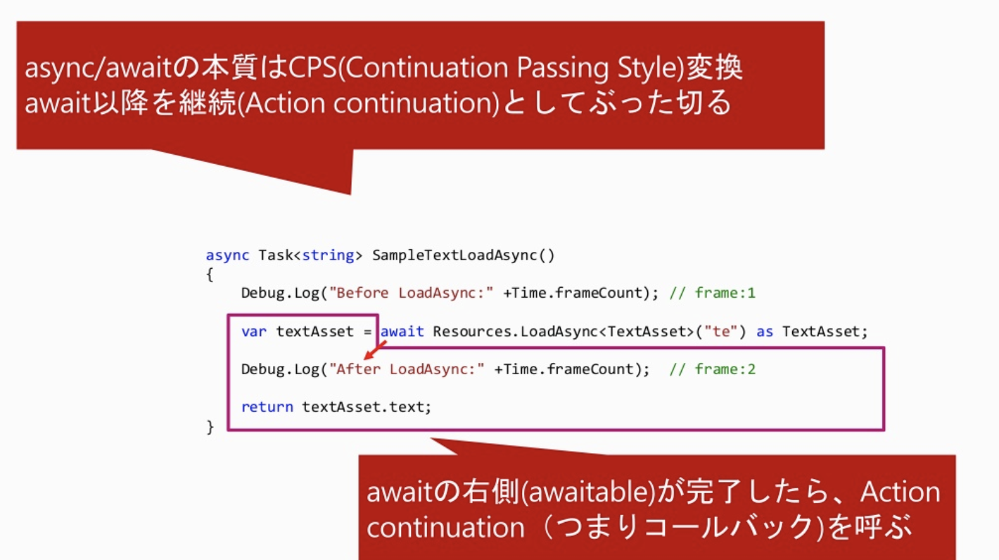
按照作者所说，那个CPS的名字看起似乎很了不起，实际上也没什么，就是Callback的连锁。当await的内容执行完就执行回调。被作者叫做自动回调制造机。
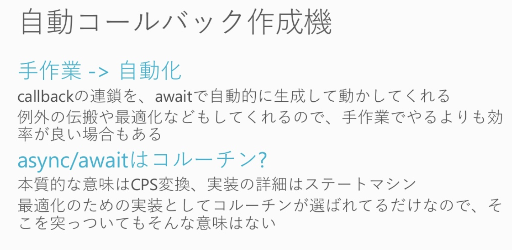
同时对于async/await的处理进行了优化，虽然是异步的写法但是在实际的运行中也有可能是同步执行。
具体的话Awaiter是怎么是实现的呢？我在别的文章看到过貌似，就是这个Awaiter实现异步处理的类是可以自己实现的，它提供了一些接口和类来实现。IsCompleted的标志位则是用来控制同步还是异步处理，避免了重复执行的时候产生的额外的Delegate调用。

除此之外，对于有复数的await调用的情况下也有一些优化:
这里有复数个await，看起来会有三个Action continuation(Delegate)组成的，但实际上一个continuation都不会生成。根据作者的描述是说在async类型的方法中会有一个状态机(AsyncStateMachine)，所有的continuation都会由this.MoveNext()方法表示，通过推进状态机的状态，来完成所有的continuation。节省了为每一个continuation生成Delegate的开销。
那么UniTask又是什么？UniTask是作者设计用来代替Task的，当然是为Unity而特化的类。C#原本的Task系统有许多Unity开发用不到或者很重的操作。
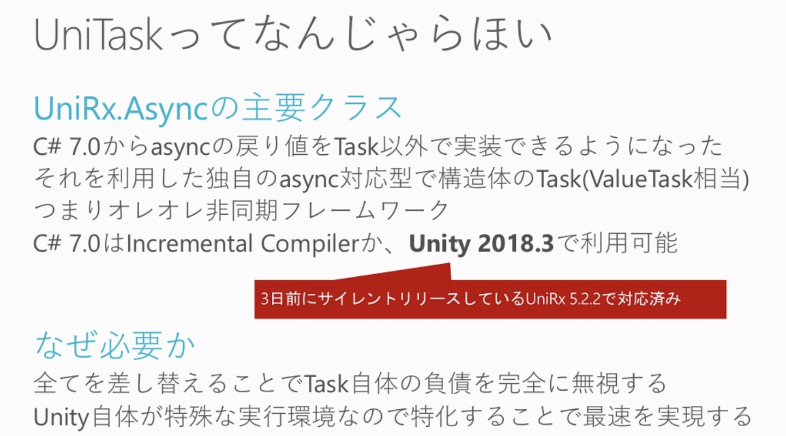
Unity是单线程运作的（基本上）。Unity是由C++的引擎层和C#的脚本层构成，C#的部分基本上都是使用的单线程处理。在使用C#的Task的时候很容易就使用了多线程的操作。所以出于各种Unity自身的特殊性，作者从特殊性和性能的方面强推使用UniTask的功能。
async/await(Task)有能把多线程的功能统合到单线程的功能(SynchronizationContext),但是在Unity的情况下，多线程是基本上不会用到甚至是不推荐用的情况下，就会算是额外的开销。
关于Task中的一些调用知识，算是轻微的拓展。通过观察两者的调用情况可以发现，UniTask中舍弃了ExecutionContext和SynchronziationContext两种Capture。
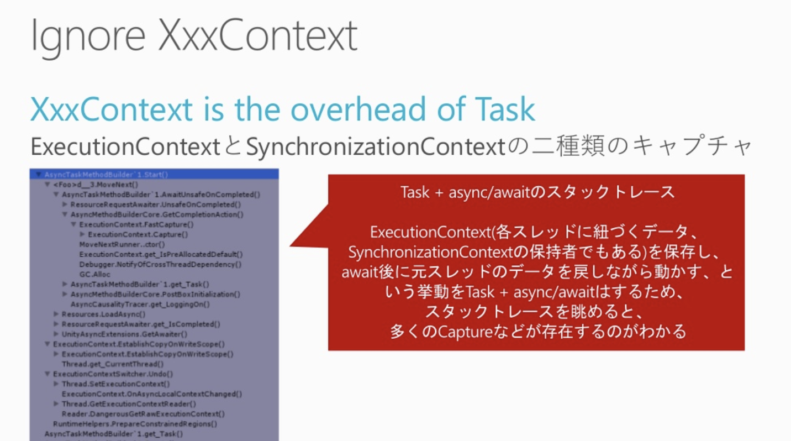
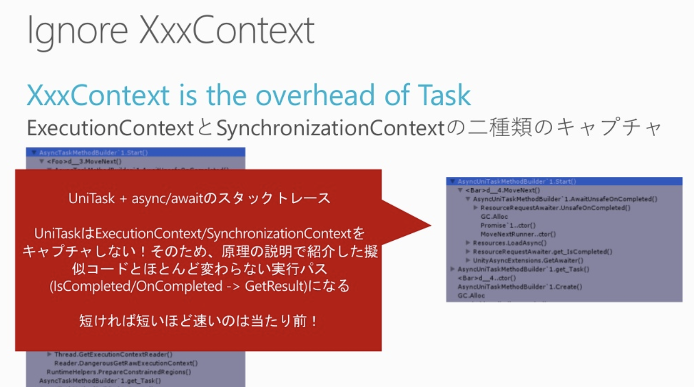
async/await是基于Gameloop的。需要使用Unity中的Coroutine的时候，UniTask中也提供了一些替换Task中的操作的功能，由于没有多余的Allocation，效率会好一些。
对比使用Unity中的Coroutine，UniTask减少了很多Allocation。
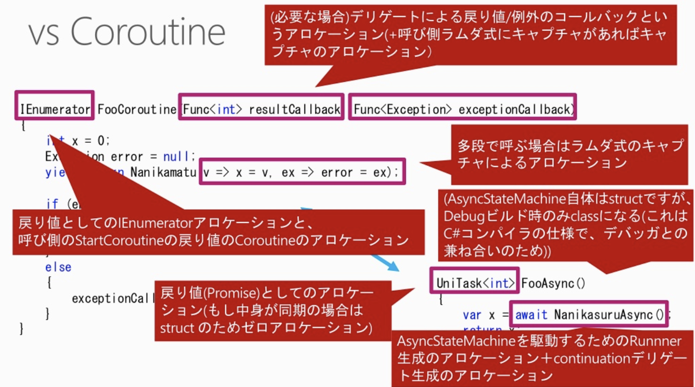
UniTask Tracker可以用来观察UniTask的状态。使用不当会发生Leak（类似于内存泄漏？），根据情况多多使用是好的。
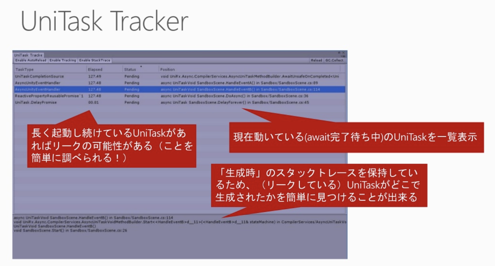
最后是作者的总结：
- 出于性能的选择 UniTask + async/await
- UniTask是为了Unity而特化的工具，相比于Task性能好好很多是肯定的
- No ExecutionContext, No SynchronizationContext
- UniTask相比于Coroutne有更少的Allocation
- 在异步处理的方面的性能要强于UniRx(Observable)
- 出于自由的选择 UniTask + async/await
- 单线程是使用的前提，不用担心掉进多线程的坑
- 提供丰富的功能，在绝大多数情况下可以替换Coroutine
- 有UniTask Tracker可以简单回避Leak(泄漏)
- 和Task,Rx混合使用没有问题
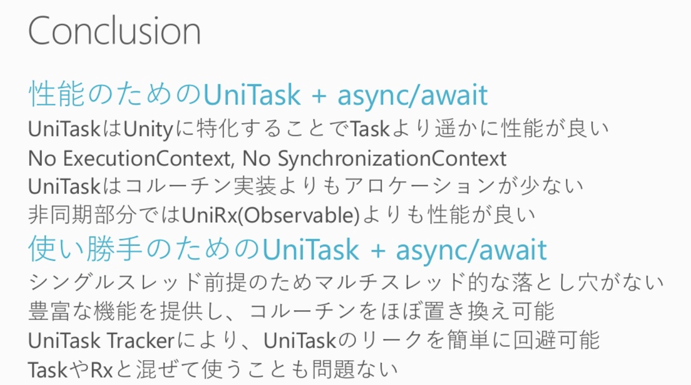
State of UniTask。UniTask内部有四个状态。由UniTaskCompletionSource生成的情况下，可以使用TrySetResult/TrySetException/TrySetCancled来切换状态。
各个状态的时间段：


异常处理,当捕获到异常之后都会一层一层的向调用的上级上抛，在哪里停止呢？作者提供了Forget()的方法用来终结UniTask的异常处理。
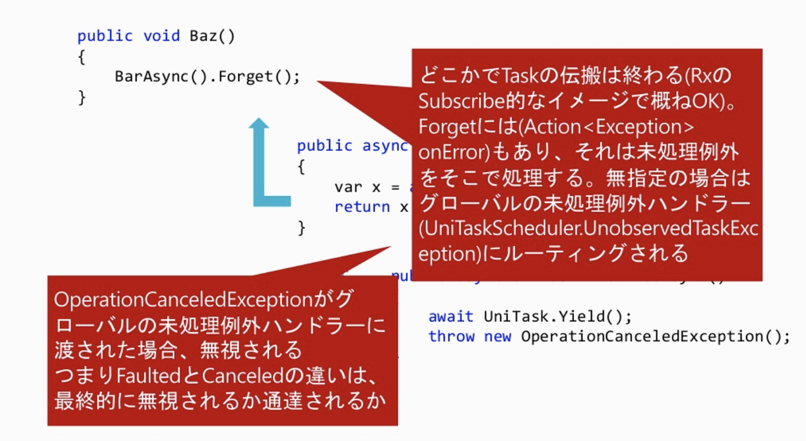
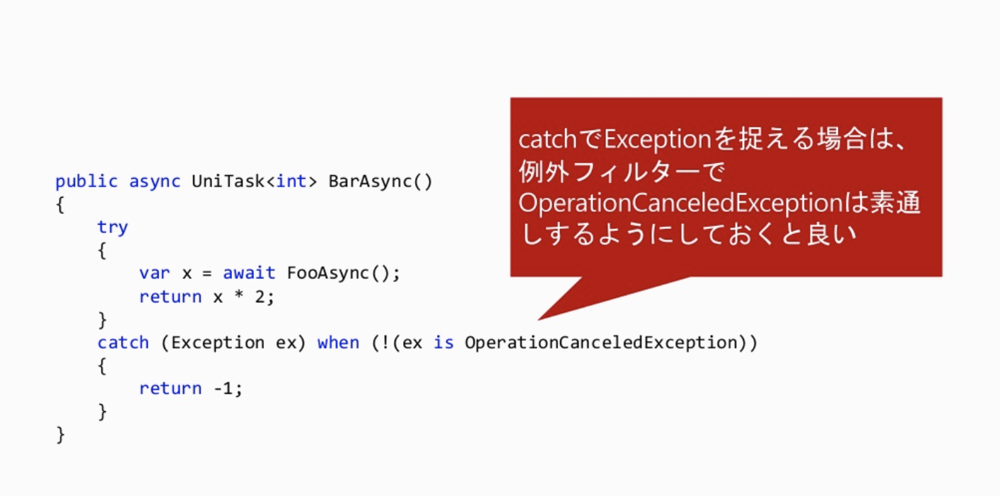
这里有一个问题就是Observable.Empty/Never可以用来做什么？
async中的Cancellation，async/await的痛点，就作者的话来说就是麻烦。取消很麻烦。
- 相比于Rx的IDisposable返回值，async/awai没有了IDisposable的Allocation，但是有了CancellationToken这个参数
具体的说来(参照下面的图片)，就是需要在异步函数的最后一个参数那里添加CancellationToken cancellationToken = default这个参数，按照作者所说，算是一个半强制的操作，如果说取消的这个操作保证绝对没有的话，不写这个参数也是可以的，但是基本上是推荐带上这个参数的。
那么由谁来发送这个OperationCanceledExcrption呢？取消就代表着OperationCanceledException，可以通过cancellationToken.IsCancelationRequested来检查是否被取消，但是，在在代码中去使用这个东西来检查是不需要的。因为在(Unity)用户代码中都是一些同步处理，而实际上抛出这个OperationCanceledException异常的是异步处理，也就是说来源都是= asyncOperation.ConfigureAwait(token), UniTask.Delay(token), etc...，而我们所要做的就是把这个Token传递给这些异步处理的当中就OK了。
在Unity中的MonoBehaviour/OnDestory便利的使用：
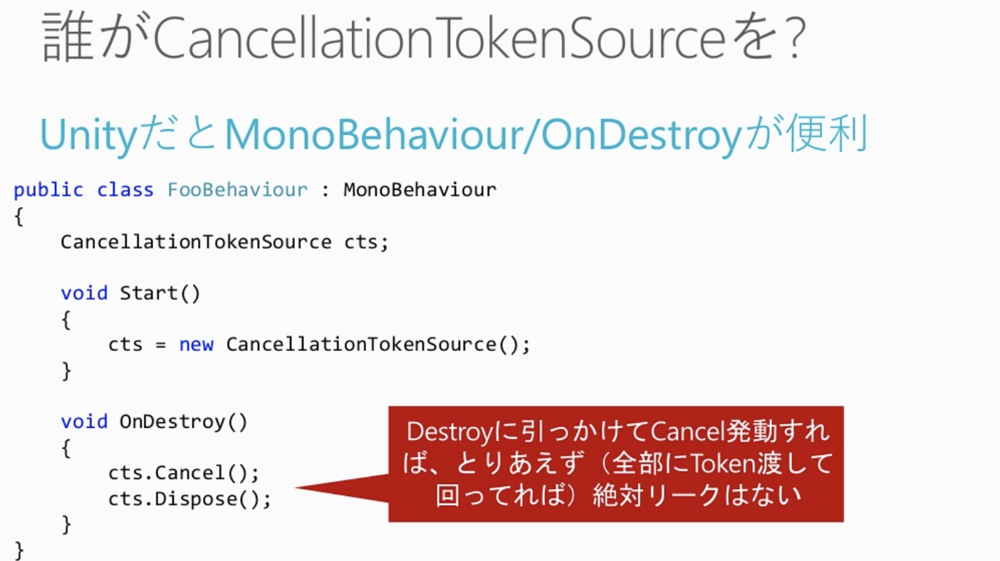
异常处理是会拖累性能的，针对特殊情况，比如说同时大量的Cancle异常发生，针对同一个事件大量的对象对此发出异常事件的情况，我们可以使用提供的UniTask.SuppressCancellationThrow来抑制这一层例外的大量发射的情况，但是这个方法只能抑制这一层的情况。只会在特殊情况下使用这个，记着吧。
Async Eventhandling。而实际上async/await不单单可以实现异步处理，也是可以用来做Event(事件)的实现的。但是原则上还是推荐EventHandling由Rx为主实现。async/await的EventHandling实现还是作为一个可以实现的一个方式，但是不做推荐。
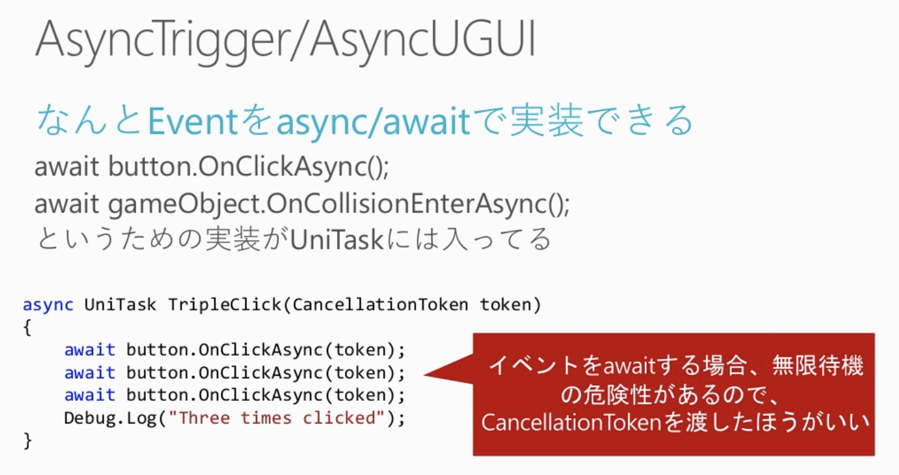

作者出于性能的考虑，一些本地的变量可以被重复使用。如下面的代码，我没有实际上试过，但是那个变量i貌似应该有些问题。
还有一些别的使用可以参考UniTask(async/await?)的ReadMe文档。(当然我是还没找啦)
最后总结一下，用作者的意思就是恐れず、どんどん使いましょう、と。
大体上的印象我是从这篇文章终于算是稍微理解了一些：
这个作者还有一些其他的入门文章有时间也可以观摩一下:UniRx入門シリーズ 目次はこちら
超级有用的一篇知乎文章：
里面的那个讲Rx的视频真的很厉害。
UniRx中遇见的
PlayerLoop
所以说PlayerLoop是个什么东西我还没搞懂，只不过在读源码的时候发现了这么几行：1
2
3// UniRx用
var playerLoop = ScriptBehaviourUpdateOrder.CurrentPlayerLoop;
PlayerLoopHelper.Initialize(ref playerLoop);
有时候大佬的两行代码我的用一天来理解。首先我不知道UniRx怎么用，其次为什么要在这里这么用。几番调查锁定了这两行代码的用意。
在使用Unity的ECS和UniRx的时候，两者的PlayerLoop会冲突，读源码就会大概理解(接受？)这个情况。
ECSを使っているプロジェクトにUniRxをぶちこむと、ECSとUniRxのPlayerLoopが喧嘩してUniRxが勝ちます（ECSが動かなくなります）
ECS:1
2
3
4
5
6
7
8
9
10
11
12
13
14// GameBootstrap.cs
namespace Unity.Entities
{
static class AutomaticWorldBootstrap
{
[]
static void Initialize()
{
DefaultWorldInitialization.Initialize("Default World", false);
}
}
}
1 | // ScriptBehaviourUpdateOrder.cs |
UniRx:1
2
3
4
5
6
7
8
9
10
11
12
13
14
15
16
17
18
19
20
21
22
23
24
25
26
27
28
29
30
31
32// PlayerLoopHelper.cs
public static void Initialize(ref PlayerLoopSystem playerLoop)
{
yielders = new ContinuationQueue[7];
runners = new PlayerLoopRunner[7];
var copyList = playerLoop.subSystemList.ToArray();
copyList[0].subSystemList = InsertRunner(copyList[0], typeof(UniTaskLoopRunners.UniTaskLoopRunnerYieldInitialization), yielders[0] = new ContinuationQueue(), typeof(UniTaskLoopRunners.UniTaskLoopRunnerInitialization), runners[0] = new PlayerLoopRunner());
copyList[1].subSystemList = InsertRunner(copyList[1], typeof(UniTaskLoopRunners.UniTaskLoopRunnerYieldEarlyUpdate), yielders[1] = new ContinuationQueue(), typeof(UniTaskLoopRunners.UniTaskLoopRunnerEarlyUpdate), runners[1] = new PlayerLoopRunner());
copyList[2].subSystemList = InsertRunner(copyList[2], typeof(UniTaskLoopRunners.UniTaskLoopRunnerYieldFixedUpdate), yielders[2] = new ContinuationQueue(), typeof(UniTaskLoopRunners.UniTaskLoopRunnerFixedUpdate), runners[2] = new PlayerLoopRunner());
copyList[3].subSystemList = InsertRunner(copyList[3], typeof(UniTaskLoopRunners.UniTaskLoopRunnerYieldPreUpdate), yielders[3] = new ContinuationQueue(), typeof(UniTaskLoopRunners.UniTaskLoopRunnerPreUpdate), runners[3] = new PlayerLoopRunner());
copyList[4].subSystemList = InsertRunner(copyList[4], typeof(UniTaskLoopRunners.UniTaskLoopRunnerYieldUpdate), yielders[4] = new ContinuationQueue(), typeof(UniTaskLoopRunners.UniTaskLoopRunnerUpdate), runners[4] = new PlayerLoopRunner());
copyList[5].subSystemList = InsertRunner(copyList[5], typeof(UniTaskLoopRunners.UniTaskLoopRunnerYieldPreLateUpdate), yielders[5] = new ContinuationQueue(), typeof(UniTaskLoopRunners.UniTaskLoopRunnerPreLateUpdate), runners[5] = new PlayerLoopRunner());
copyList[6].subSystemList = InsertRunner(copyList[6], typeof(UniTaskLoopRunners.UniTaskLoopRunnerYieldPostLateUpdate), yielders[6] = new ContinuationQueue(), typeof(UniTaskLoopRunners.UniTaskLoopRunnerPostLateUpdate), runners[6] = new PlayerLoopRunner());
playerLoop.subSystemList = copyList;
PlayerLoop.SetPlayerLoop(playerLoop);
}
[]
static void Init()
{
// capture default(unity) sync-context.
unitySynchronizationContetext = SynchronizationContext.Current;
mainThreadId = Thread.CurrentThread.ManagedThreadId;
if (runners != null) return; // already initialized
var playerLoop = PlayerLoop.GetDefaultPlayerLoop();
Initialize(ref playerLoop);
}
这里我把代码一起粘贴出来是因为这里面有好多我知识点的盲区，有代码能加快一些理解。
最终结论就是加上最上面的两行使得ECS和UniRx的PlayerLoop不冲突，不会造成一方失效的问题。
也就是这一步并不是UniRx要做的设定而是为了让两者共存而做的设定。
那么通过这个问题我发现的一些知识盲区：
- ECS是什么？
- PlayerLoop是什么，为什么游戏开始之前要指定PlayerLoop的设定？
调查了一下发现这个问题是真的很复杂，需要展开另一篇关于Unity的ECS的内容来加深理解了。
UniRx-各种用法
SubscribeOnMainThread & ObserveOnMainThread
这个是做什么的
SubscribeOnMainThread means that you are subscribing (therefore starting the task [for cold observables]) in main thread whereas ObserveOnMainThread means that you are observing (listening) onNext messages in main thread.
When you are using Observable.Start method, the task will be run on the ThreadPool by default. So use it with the ObserveOnMainThread to access Unity API in the Subscribe method.
从名字上也能大致了解，就是为了让Subscribe中的内容在MainThread中执行。因为涉及到Unity的GameObject的操作都要在主线程中进行。
按理说我应该试着使用这两个方法，再去了解这个方法应不应该这样用，也就是试错。
但是我听前辈说这两个方法不太靠得住（意思应该就是使用的时候可能会报错，因为在子线程中动Unity的GameObject，或者Unity的一些东西，编译就会报错，会好好的报出错误信息的），最靠谱的方式是用await UniTask.Yield()。至于具体怎么用，在后面的地方专门展开。
ObserveEveryValueChanged
Observable
Disposables
这个也是一个很重要的概念。